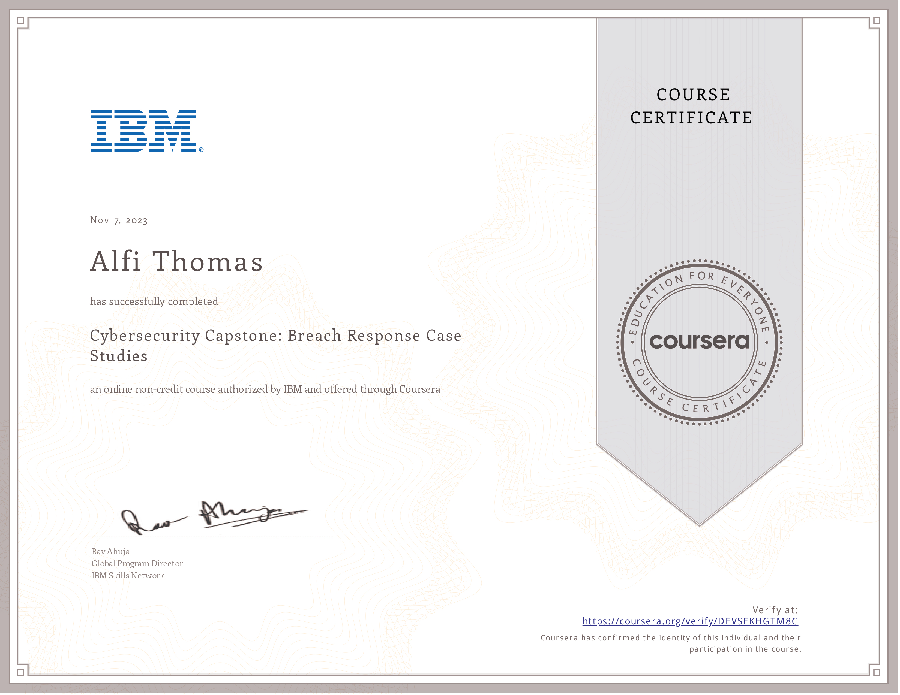

Issued to Alfi Thomas by Coursera
Authorized by IBM
This badge earner can research and describe breach cases including the following scenarios: A third party software company breach where multiple clients are affected; Ransomware threats and the consequences to organizations; Exposed data through misconfigured servers; and the effects of a phishing attack and cybersecurity criminal threats. The earner can investigate a real-world security breach identifying the attack, vulnerabilities, costs and prevention recommendations.
Alfi Thomas has successfully completed 'Cybersecurity Capstone: Breach Response Case Studies' on November 7, 2023, an online, non-credit course authorized by IBM and offered through Coursera.
